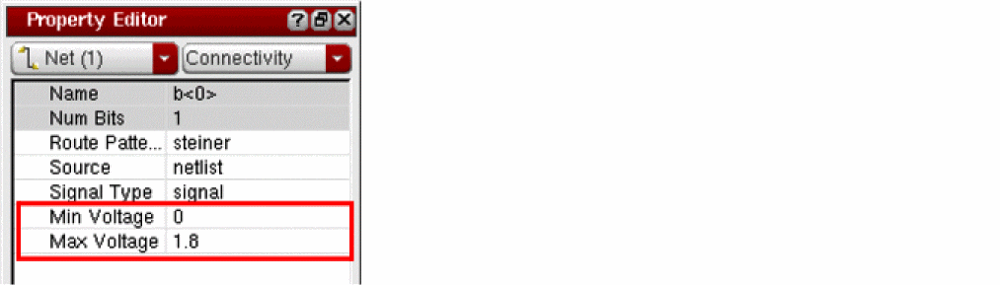
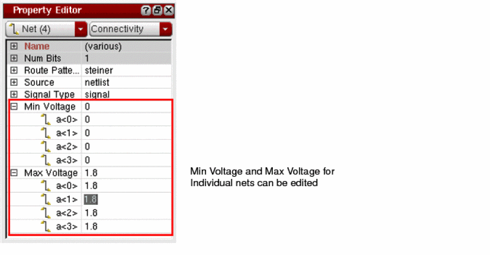

Voltage Range Information
In Virtuoso, the voltage range information on a net is used to verify or enforce voltage dependent constraints, such as voltage dependent spacings, minVoltageSpacing. By using the Property Editor assistant, you can view and edit the voltage range information of nets, minVoltage and maxVoltage.

You can select one or more nets in the Navigator assistant as shown in the following figure.

In the Property Editor assistant, the Min Voltage and Max Voltage are displayed for the selected nets.

You can edit the Min Voltage and Max Voltage values for any or all of the nets.
Related Topics
Return to top